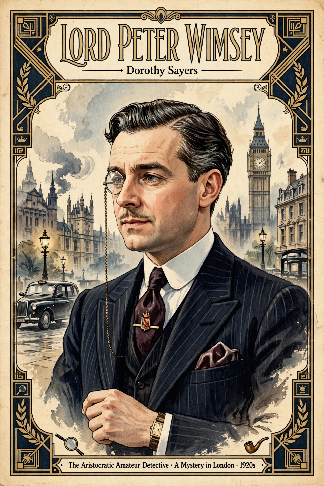

Lord Peter Death Bredon Wimsey is a fictional English aristocrat and amateur detective created by Dorothy L. Sayers, appearing in 11 novels and numerous short stories between 1923 and 1937.

A wealthy younger son of a duke, Wimsey masks intelligence and First World War shell shock behind a frivolous manner. Assisted by his valet Bunter and Scotland Yard's Charles Parker, he solves murders. His courtship of crime writer Harriet Vane forms the arc of Strong Poison, Have His Carcase, Gaudy Night and Busman's Honeymoon.
Wimsey is a central figure of the Golden Age of Detective Fiction. Jill Paton Walsh later completed and continued the series.